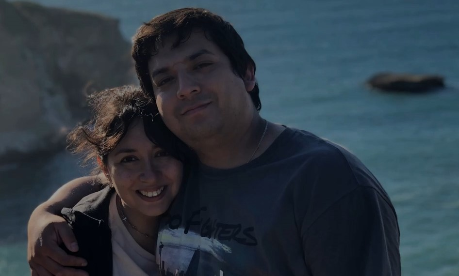

¡Hola!
Mi nombre es Marcelo, y en esta página te contaré un poco de mi.
Soy Enfermero de profesión, y he trabajado 13 años en una unidad de paciente crítico y siempre he realizado distintas tareas y proyectos informáticos, pero hasta el día de hoy nunca había tomado clases formales de ello. Ahora, estoy realizando estudios de programación en FullStack MERN con todos los conocimientos que he adquirido realizando sitios web, creando herramientas que utilizo en mi trabajo y en mi vida diaria, y desarrollando programas para distintos usos.
| Nombre | Marcelo Mendoza Figueroa |
| Edad | 37 años |
| Profesión | Enfermero |
| Tiempo de trabajo | 13 años |
| Lugar actual de trabajo | Unidad de paciente crítico, Hospital Las Higueras |